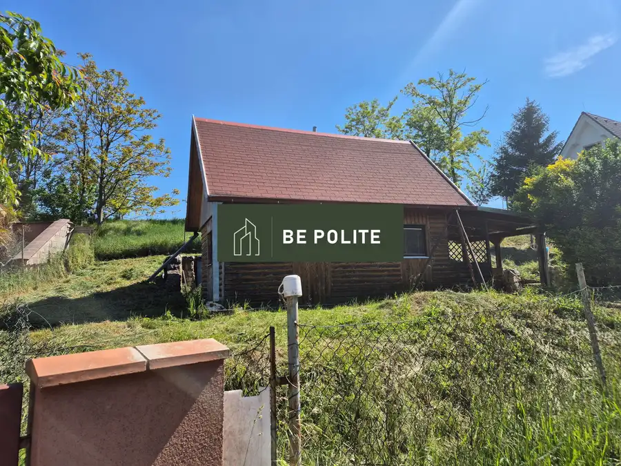
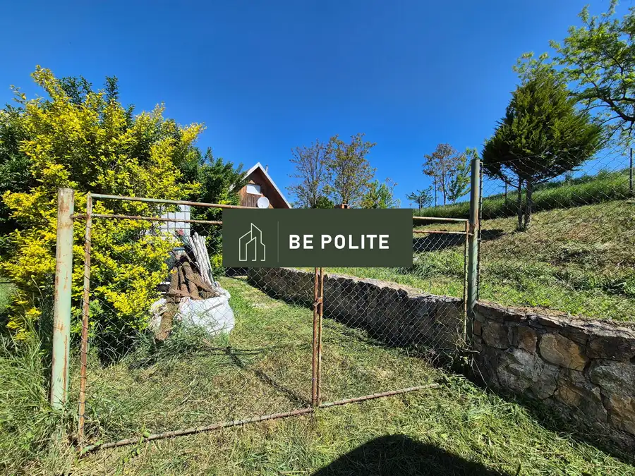
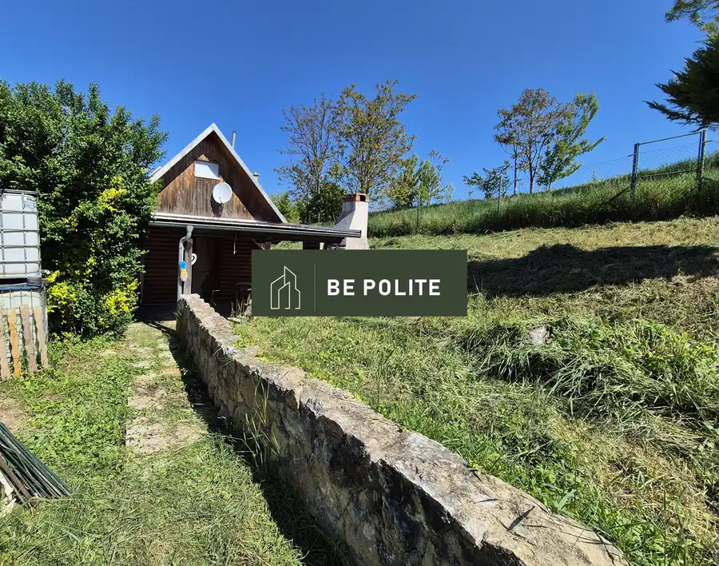
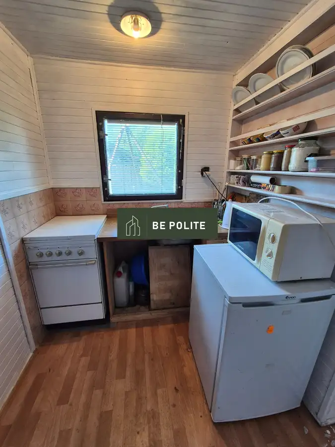
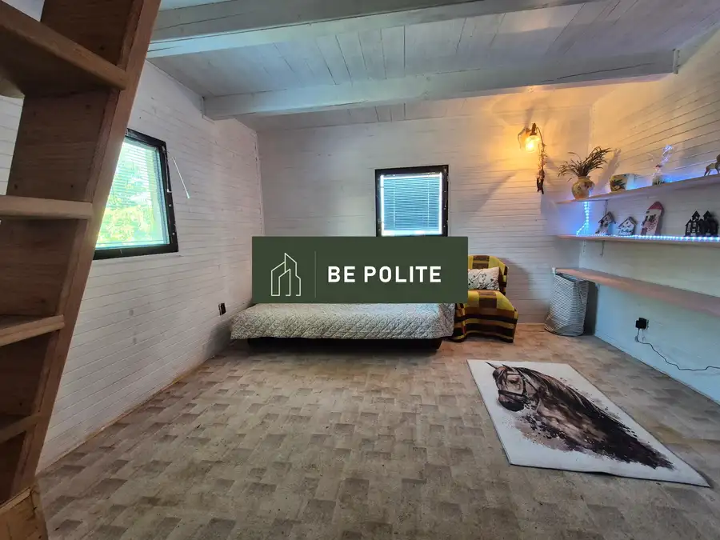
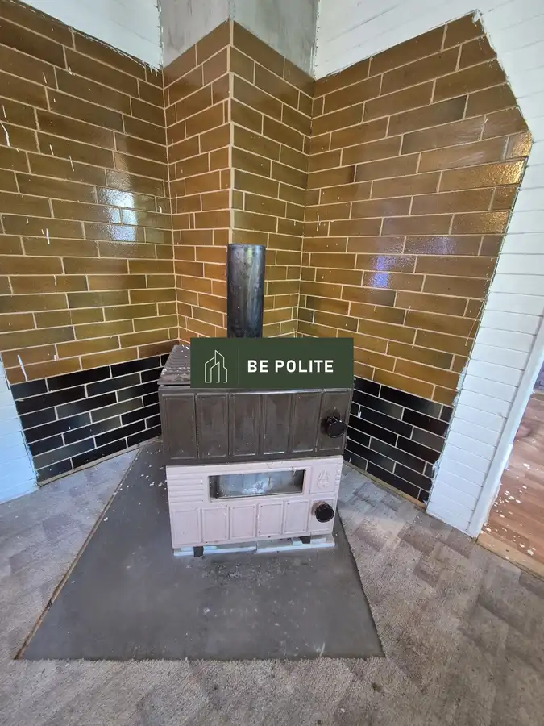
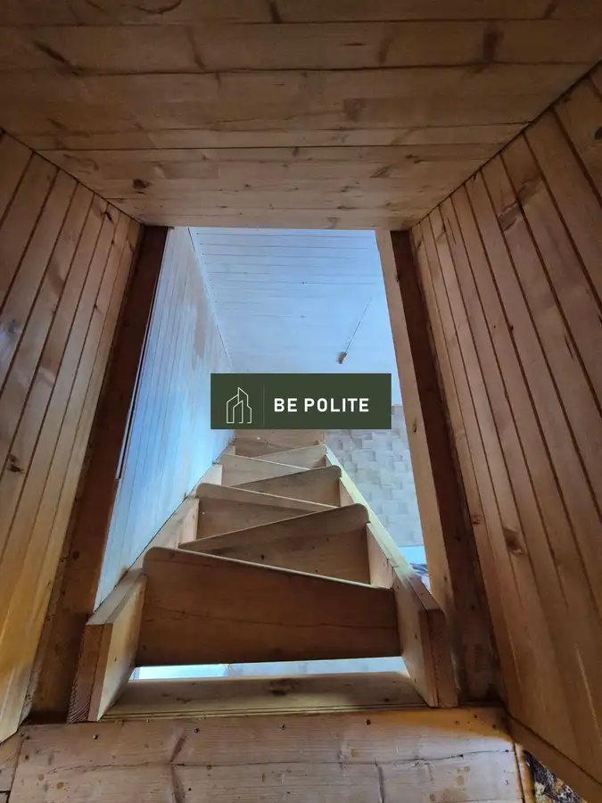
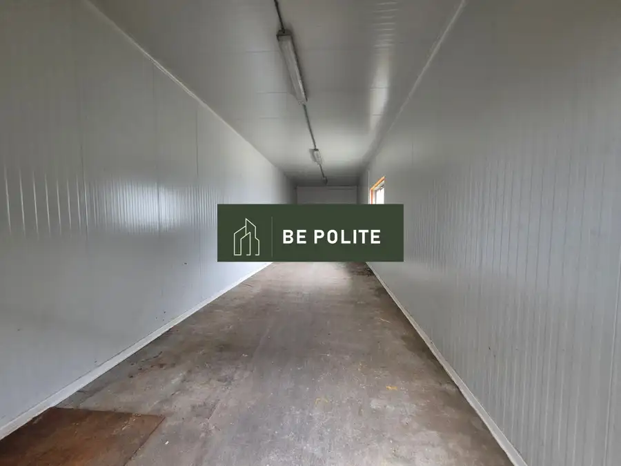
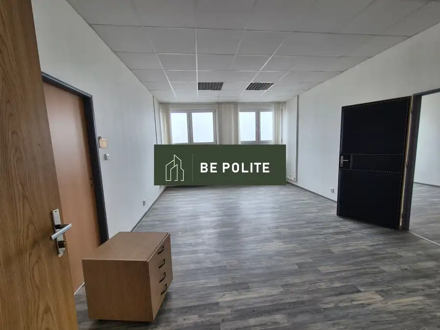
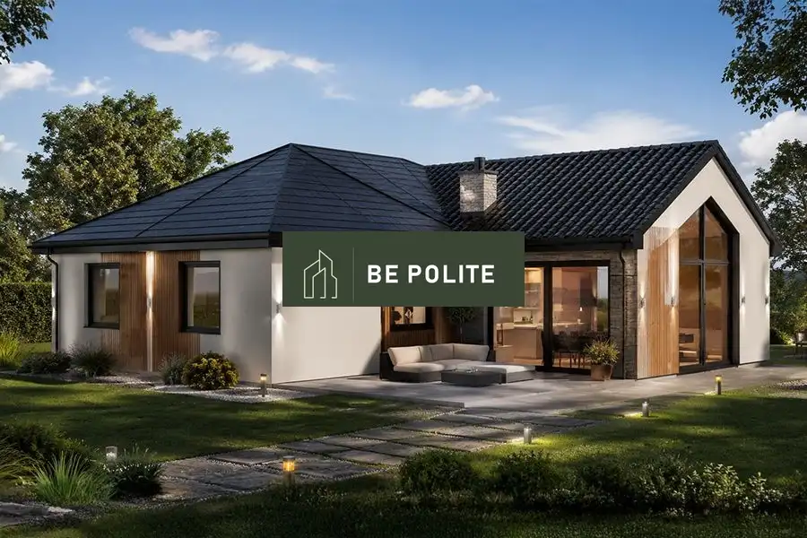

Predaj rekreačnej chaty uprostred prírody, 24 m2, úplný relax, Báb
Báb







- Plocha48 m²
- StavČiastočná rekonštrukcia
- VlastníctvoOsobné
O nehnuteľnosti
Be Polite s.r.o. ponúka exkluzívne na predaj drevenú rekreačnú chatu v nádhernej prírode na konci dediny s 3 árovým pozemkom. Chata je svojou polohou a umiestnením vhodná pre milovníkov prírody, pokoja a zároveň s výbornou dostupnosťou do okolitých miest. Je situovaná v intraviláne obce a zároveň máte pocit ako by ste boli niekde v lese. Okrem pokoja a pohody, si tu nájde každý to svoje, či už deti, alebo dospelí. V priamom susedstve môžete využiť ponuku jazdy na koňoch, alebo možnosti prechádzok, hubárčenia, či cykloturistiky. Kúsok od chaty je aj rybník, kde si môžete len tak posedieť, či uloviť niečo na večeru. Obec Báb okrem nádhernej prírody ponúka aj dobrú občiansku vybavenosť. Chata pozostáva na prízemí z kuchynky, obývačky, menšej miestnosti vhodnej na kúpeľňu. Na poschodie vedú mlynárske schody, kde sú dve spálne. Celá chata je obložená dreveným obkladom, čo ešte umocňuje pocit relaxu a pohody. Pred chatou je zastrešené posedenie s grilom a udiarničkou, čo opäť prináša ďalšie čaro. V chate je elektrina, voda zo studne, ale pred pozemkom je aj možnosť napojenia sa na obecnú vodu. Kúsok od pozemku je aj prírodný prameň s pitnou vodou. Kúrenie v dome je zabezpečené krbovými kachlami. Chata vytvára veľmi príjemnú pohodovú atmosféru. Celkovo má pozemok rozlohu 300 m2, je obdĺžnikového tvaru, mierne svahovitý. Na pozemok sú tri vstupy. Parkovanie je priamo na pozemku. - Chata: je drevostavba, obložená dreveným obkladom- strecha: asfaltový šindel- úžitková plocha 48 m2- vedľa chaty je aj menšia pivnička.IS:- elektrika v chate- studňa- verejný vodovod vedie pred pozemkomDispozícia:- kuchyňa, miestnosť na posedenie, miestnosť pre kúpeľňu, na poschodí dve izby.Pozemok:- 300 m2- trávnatý s množstvom zeleneVýhody:- vhodná na chvíle oddychu- slušní susedia- intravilán obce- výborná dostupnosť do Nitry a ďalších miest- pre milovníkov prírody a pokoja- dobrá občianska vybavenosť obce: lekár, zubár, škola ( 1-9), škôlka, obchody, fitcentrum, lekáreň, kostol, pošta,...Cena:Cena nehnuteľnosti je v RK .V prípade záujmu kontaktujte makléra:Blanka Čížovámobil: 0904 875 764mail: blankacizova@gmail.com
Parametre
- Druh
- Chata, drevenica, zrub
- Dátum zverejnenia
- 19. 05. 2026
- Energetický certifikát budovy
- nie je
- Plocha pozemku
- 300 m²
- Počet nadzemných podlaží
- 2
- Rok výstavby
- 2006
- Stav nehnuteľnosti
- Čiastočná rekonštrukcia
- Terén pozemku
- Svahovitý
- Typ
- Predaj
- Typ konštrukcie
- Drevená
- Vlastníctvo
- Osobné
- Zastavaná plocha
- 24 m²
- Úžitková plocha
- 48 m²
Kde to je


Mohlo by Vás zaujímať

Komerčné priestoryNové Cena na vyžádáníPrenájom skladových priestorov, 25 m2, 53 m2 v Leviciach Levice 25 m²
Komerčné priestoryNové Cena na vyžádáníPrenájom kancelárskych priestorov, samostatné aj prepojené, Levice Levice 20 m²
DomNové 190 500 €Novostavba 5-izb. RD s terasou, 6,8 á pozemok, v prostredí plnom zelene, Lula Lula 116 m²